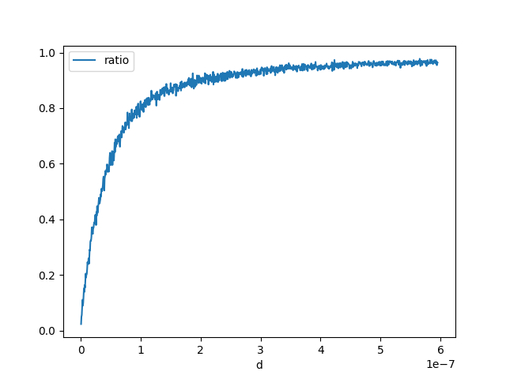

Note
Go to the end to download the full example code.
Float Conversion¶
I came up with the following question ? What is the probability this holds?
Probability (float64)x == (float32)x¶
Let’s evaluate how many time we draw a random double number equal to its float conversion.
import random
import numpy
import pandas
import matplotlib.pyplot as plt
rnd = numpy.random.random(100000000)
rnd.shape, rnd.dtype
((100000000,), dtype('float64'))
rnd32 = rnd.astype(numpy.float32).astype(numpy.float64)
equal = (rnd == rnd32).sum()
equal
np.int64(2)
It is very low. Let’s check the reverse is true.
rnd32b = rnd32.astype(numpy.float64).astype(numpy.float32)
equal = (rnd32b == rnd32).sum()
equal
np.int64(100000000)
Let’s study the distribution of the difference.
(np.float64(-2.9802321055427683e-08), np.float64(2.9802321721561498e-08))
(np.float64(1.0039616360479897e-08), np.float64(0.9999999966702148))
(array([ 49881., 49760., 49822., 49977., 49720., 50207., 49620.,
50194., 50275., 49983., 50492., 49723., 49813., 50343.,
50042., 50261., 50351., 49860., 49856., 49400., 50135.,
49675., 49996., 50042., 50082., 50008., 50141., 49998.,
50102., 49972., 50141., 49913., 49822., 50547., 50224.,
49780., 49479., 50804., 50014., 49697., 49911., 49937.,
50068., 49981., 49893., 49773., 49813., 49993., 49765.,
50270., 50178., 50029., 50251., 50330., 49851., 49771.,
49868., 49508., 50625., 50066., 50462., 50129., 50270.,
49713., 50290., 50098., 50045., 50071., 50289., 49997.,
49885., 49712., 49907., 50208., 50105., 49946., 50189.,
50177., 50124., 50176., 50171., 50164., 49910., 50089.,
50297., 49783., 49979., 49946., 49933., 49747., 49723.,
50431., 50063., 50115., 49804., 49914., 50018., 49894.,
49686., 49618., 49967., 49933., 50389., 49853., 49729.,
49835., 49959., 50057., 49626., 49878., 50164., 50364.,
50428., 49926., 50081., 49721., 50388., 50078., 50100.,
49928., 49620., 50098., 49934., 50281., 50174., 49695.,
49724., 49912., 50395., 49694., 50626., 50132., 50257.,
49985., 49749., 49935., 49781., 50120., 50234., 49975.,
50063., 50436., 49874., 50397., 49972., 49938., 49716.,
50325., 50375., 49998., 49849., 50214., 49771., 49845.,
49920., 49965., 49781., 49994., 50071., 50086., 50023.,
49876., 50397., 50403., 50247., 49810., 49899., 49457.,
50273., 50052., 49672., 50048., 49929., 49946., 49394.,
50007., 49837., 50576., 50007., 50326., 50208., 50219.,
49978., 50156., 50555., 49886., 49692., 50646., 49828.,
50176., 49909., 50143., 49414., 50031., 50093., 50002.,
49879., 49672., 50118., 50371., 50023., 49794., 49540.,
50094., 49724., 50226., 50148., 49854., 49906., 49976.,
49876., 49908., 49779., 49520., 50220., 49971., 49844.,
49957., 50260., 49691., 50189., 49745., 50106., 50064.,
50257., 49967., 49977., 50416., 49784., 49950., 49921.,
49615., 49984., 49934., 49737., 50154., 50184., 49675.,
49883., 50353., 50238., 50129., 50071., 49623., 50124.,
49990., 50300., 50306., 50103., 50254., 99761., 100250.,
100031., 100011., 100239., 100127., 100003., 100362., 100646.,
100302., 100088., 99848., 100454., 99638., 100199., 100002.,
100304., 99733., 99658., 99776., 99972., 99683., 99890.,
100236., 100268., 99907., 99862., 100027., 99816., 99792.,
100044., 100163., 100402., 99801., 100334., 99975., 100188.,
100280., 99428., 99635., 100213., 99966., 99564., 100156.,
99923., 100550., 99704., 99662., 99888., 100073., 99833.,
99366., 99678., 100022., 100147., 100205., 99595., 100112.,
100065., 99647., 99733., 99782., 99965., 100173., 100312.,
100060., 99988., 99701., 99791., 100420., 99869., 100634.,
99593., 99874., 99437., 100274., 99766., 100622., 99981.,
99998., 99721., 100507., 100108., 100459., 99188., 99960.,
99963., 99867., 99975., 99971., 99989., 99831., 99769.,
99999., 99892., 100035., 100047., 100051., 99652., 99584.,
99795., 100078., 100368., 100352., 99948., 99737., 100342.,
100290., 99972., 100057., 99691., 100107., 100268., 99369.,
100219., 100056., 100330., 100302., 99427., 99916., 100405.,
99753., 100679., 100094., 100167., 149814., 150582., 150226.,
149548., 150304., 149794., 149487., 149281., 150180., 149813.,
150559., 150285., 150457., 149774., 150031., 150003., 149935.,
150172., 149961., 150075., 150821., 150263., 150854., 149899.,
149261., 149447., 150478., 150181., 150416., 149354., 149825.,
149462., 150501., 150313., 150806., 150450., 149795., 150568.,
149880., 149587., 150048., 150080., 149961., 149478., 150148.,
150241., 150315., 149939., 149831., 149488., 151002., 150070.,
150272., 150015., 149839., 150375., 149370., 149545., 150110.,
149868., 150044., 150366., 174793., 199305., 200405., 199913.,
199877., 200523., 200346., 199816., 200467., 200421., 200567.,
199550., 200227., 200162., 200584., 200104., 199527., 200743.,
200065., 200639., 199817., 199467., 199913., 199716., 199964.,
199361., 199902., 199744., 200708., 199494., 199734., 213020.,
250105., 249709., 250532., 249578., 249913., 249605., 249830.,
250662., 250068., 249995., 249608., 251195., 249997., 249481.,
250484., 281486., 299973., 300075., 299546., 299904., 299631.,
300202., 300244., 340428., 350159., 350561., 350232., 394982.,
399543., 447526., 547856., 547156., 447780., 399553., 395526.,
349630., 350521., 350203., 340488., 300922., 300119., 298875.,
300390., 299630., 300077., 299250., 281726., 250291., 249367.,
249677., 250192., 250151., 250093., 250473., 250299., 249152.,
250599., 249853., 249723., 250827., 249446., 249731., 211926.,
200513., 200555., 199666., 200123., 199909., 200050., 199825.,
200051., 200010., 199752., 199540., 200495., 199487., 200393.,
200254., 200152., 200402., 200411., 200406., 199892., 199574.,
199615., 199844., 199911., 200133., 199704., 200044., 200552.,
199685., 199970., 174703., 150413., 150744., 150243., 150343.,
149915., 149910., 149832., 150260., 149691., 149770., 150078.,
149808., 149844., 150269., 149744., 150494., 149891., 150088.,
150059., 150614., 149710., 150152., 150013., 150279., 150136.,
150383., 150350., 150282., 149837., 149864., 150102., 150043.,
150050., 149974., 150556., 150067., 149104., 149330., 150040.,
149675., 149745., 149618., 149877., 150015., 149658., 149976.,
149717., 150142., 149621., 149562., 149731., 150016., 150543.,
150132., 149645., 149487., 149488., 150304., 149225., 149046.,
150489., 150083., 99741., 99691., 100032., 100138., 99720.,
99799., 100116., 100174., 100197., 100195., 99772., 100448.,
100434., 99595., 100097., 100036., 99905., 99716., 100016.,
100159., 99473., 100038., 99923., 99592., 99618., 99987.,
100172., 99638., 100023., 100361., 100520., 100171., 99864.,
99802., 99622., 99548., 100008., 100179., 99776., 99786.,
100085., 100426., 99545., 99875., 100116., 99704., 100032.,
99503., 100261., 99761., 100006., 99878., 99787., 100178.,
99846., 100326., 100058., 99659., 100441., 100182., 99752.,
99898., 100069., 100018., 99729., 99659., 99954., 99724.,
100411., 99873., 100077., 99921., 99576., 100065., 99433.,
99883., 100327., 99638., 100289., 99759., 99968., 99648.,
100143., 99560., 99982., 99331., 100054., 99921., 99559.,
100220., 99998., 99790., 100459., 99989., 99940., 99852.,
100115., 100135., 99580., 99612., 99603., 99910., 99957.,
100346., 100512., 100012., 100292., 99655., 100167., 100889.,
99831., 99816., 99965., 100000., 100371., 99896., 100208.,
100083., 100353., 100058., 100255., 99838., 99583., 100289.,
99616., 50373., 50012., 49859., 50224., 49652., 49378.,
49851., 49884., 49648., 50034., 49705., 49848., 50262.,
50072., 49731., 49914., 49792., 49998., 49766., 49993.,
49942., 49796., 49836., 49936., 50114., 50030., 50096.,
49299., 50098., 50315., 50262., 49476., 50315., 49949.,
50123., 50095., 50301., 50208., 50086., 49598., 50132.,
50119., 49859., 49930., 50273., 49998., 50167., 50123.,
50132., 49776., 50091., 49885., 49819., 50164., 50217.,
49974., 49797., 50056., 50267., 50245., 49763., 50322.,
49835., 50084., 50410., 50044., 50353., 50310., 50072.,
50295., 49856., 49943., 49865., 49855., 50224., 50190.,
49776., 50076., 50164., 49944., 49560., 49740., 49522.,
50092., 50228., 50070., 49875., 50030., 49995., 49967.,
49759., 49776., 49993., 49737., 49816., 50334., 49955.,
49774., 50123., 50137., 49848., 50164., 49934., 49701.,
49708., 49899., 49676., 50185., 49953., 49879., 49689.,
50204., 50318., 50044., 50279., 49834., 50145., 49821.,
50119., 50348., 49986., 49986., 49869., 50429., 49762.,
50245., 50360., 50393., 50083., 50139., 50253., 50194.,
49773., 49953., 49804., 49983., 50077., 49690., 49986.,
49958., 49915., 50195., 50467., 50168., 49956., 50217.,
49940., 50102., 49772., 50496., 50199., 50014., 49914.,
49884., 49983., 50065., 49769., 49658., 49880., 50234.,
49694., 49635., 49332., 50192., 49844., 50133., 49774.,
50203., 49928., 50223., 49826., 50149., 49807., 50122.,
50110., 49853., 50166., 50252., 49708., 49664., 50273.,
49819., 50095., 49803., 50161., 50136., 49718., 49973.,
50265., 49612., 50251., 50127., 50165., 49855., 50043.,
50009., 50634., 49955., 49799., 50034., 49816., 49961.,
49699., 50052., 50459., 50257., 50304., 49856., 49836.,
50001., 49778., 50155., 50013., 50147., 49794., 49710.,
50165., 49839., 50144., 50618., 49974., 50188., 50070.,
50226., 49738., 49736., 50097., 50336., 49710., 50059.,
49767., 50050., 49700., 50366., 49925., 50067., 49849.,
50143., 49665., 49677., 50151., 50231., 50059., 50209.,
50214., 50066., 49717., 49750., 49731., 50291.]), array([-2.98023211e-08, -2.97427164e-08, -2.96831118e-08, ...,
2.96831124e-08, 2.97427171e-08, 2.98023217e-08], shape=(1001,)), <BarContainer object of 1000 artists>)
We finally check that double operations between float numpers remain floats.
for i in range(100000):
i, j = random.randint(0, len(rnd32) - 1), random.randint(0, len(rnd32) - 1)
d32 = numpy.float64(rnd32[i] * rnd32[j])
d64 = numpy.float64(rnd32[i]) * numpy.float64(rnd32[j])
if d32 != d64:
raise AssertionError(
"Issue with somme={0} = {1} + {2}".format(
rnd32[i] + rnd32[j], rnd32[i], rnd32[j]
)
)
Interval length distribution¶
Let’s imagine now we want to define an intervalle in which a double is converted to the same float. Let’s find out about it length.
def find_interval(x):
dx = numpy.abs(x - numpy.float32(x)) # usually not zero
dx /= 100
f = numpy.float32(x)
x1 = x
while numpy.float32(x1) == f:
x1 -= dx
x2 = x
while numpy.float32(x2) == f:
x2 += dx
return x1 + dx, x2 - dx
length = numpy.zeros((2000,))
for i in range(length.shape[0]):
x = rnd[i]
x1, x2 = find_interval(x)
length[i] = x2 - x1
min(length), max(length)
(np.float64(7.2437805265831295e-12), np.float64(5.960462257093013e-08))

(array([ 27., 28., 0., 60., 0., 0., 120., 0., 0.,
0., 0., 0., 250., 0., 0., 0., 0., 0.,
0., 0., 0., 0., 0., 0., 480., 0., 0.,
0., 0., 0., 0., 0., 0., 0., 0., 0.,
0., 0., 0., 0., 0., 0., 0., 0., 0.,
0., 0., 0., 0., 1035.]), array([7.24378053e-12, 1.19919136e-09, 2.39113893e-09, 3.58308651e-09,
4.77503408e-09, 5.96698166e-09, 7.15892924e-09, 8.35087681e-09,
9.54282439e-09, 1.07347720e-08, 1.19267195e-08, 1.31186671e-08,
1.43106147e-08, 1.55025623e-08, 1.66945098e-08, 1.78864574e-08,
1.90784050e-08, 2.02703526e-08, 2.14623001e-08, 2.26542477e-08,
2.38461953e-08, 2.50381429e-08, 2.62300904e-08, 2.74220380e-08,
2.86139856e-08, 2.98059332e-08, 3.09978808e-08, 3.21898283e-08,
3.33817759e-08, 3.45737235e-08, 3.57656711e-08, 3.69576186e-08,
3.81495662e-08, 3.93415138e-08, 4.05334614e-08, 4.17254089e-08,
4.29173565e-08, 4.41093041e-08, 4.53012517e-08, 4.64931992e-08,
4.76851468e-08, 4.88770944e-08, 5.00690420e-08, 5.12609895e-08,
5.24529371e-08, 5.36448847e-08, 5.48368323e-08, 5.60287798e-08,
5.72207274e-08, 5.84126750e-08, 5.96046226e-08]), <BarContainer object of 50 artists>)
So we can approximate this interval by something like this:
ql = numpy.sort(length)[int(length.shape[0] * 0.8)]
ql
np.float64(5.9532995866362626e-08)
An answer to the initial question¶
Let’s estimate ?
def inf_strict(x, y):
f1 = x < y
f2 = numpy.float32(x) < numpy.float32(y)
return f1, f2
def count_events(fct):
rows = []
for di in range(1, 1001):
d = di * ql / 100
total = 0
ok = 0
rnd = numpy.random.random((2000 * 3,))
for i in range(0, rnd.shape[0], 3):
s = -1 if rnd[i + 2] < 0.5 else 1
x, y = rnd[i], rnd[i] + rnd[i + 1] * d * s
f1, f2 = fct(x, y)
if f1:
total += 1
if f2:
ok += 1
if (di + 10) % 100 == 0:
print(di, d, ":", ok, total)
rows.append(dict(d=d, ratio=ok * 1.0 / total, total=total))
return pandas.DataFrame(rows)
df = count_events(inf_strict)
df.head()
90 5.357969627972636e-08 : 618 983
190 1.1311269214608899e-07 : 848 1027
290 1.7264568801245163e-07 : 892 1000
390 2.3217868387881425e-07 : 980 1071
490 2.917116797451769e-07 : 981 1046
590 3.512446756115395e-07 : 923 981
690 4.1077767147790213e-07 : 923 968
790 4.7031066734426475e-07 : 922 958
890 5.298436632106273e-07 : 968 997
990 5.8937665907699e-07 : 987 1021

<Axes: xlabel='d'>
<Axes: xlabel='d'>
An answer to a similar question: what about not strict comparison?¶
Let’s estimate ?
def inf_equal(x, y):
f1 = x <= y
f2 = numpy.float32(x) <= numpy.float32(y)
return f1, f2
df2 = count_events(inf_equal)
df2.head()
90 5.357969627972636e-08 : 983 983
190 1.1311269214608899e-07 : 981 981
290 1.7264568801245163e-07 : 972 972
390 2.3217868387881425e-07 : 1029 1029
490 2.917116797451769e-07 : 1008 1008
590 3.512446756115395e-07 : 1007 1007
690 4.1077767147790213e-07 : 991 991
790 4.7031066734426475e-07 : 996 996
890 5.298436632106273e-07 : 1027 1027
990 5.8937665907699e-07 : 1022 1022
<Axes: xlabel='d'>
def sup_strict(x, y):
f1 = x > y
f2 = numpy.float32(x) > numpy.float32(y)
return f1, f2
df3 = count_events(sup_strict)
df3.head()
90 5.357969627972636e-08 : 629 990
190 1.1311269214608899e-07 : 837 1026
290 1.7264568801245163e-07 : 881 1019
390 2.3217868387881425e-07 : 893 996
490 2.917116797451769e-07 : 967 1032
590 3.512446756115395e-07 : 940 1013
690 4.1077767147790213e-07 : 941 999
790 4.7031066734426475e-07 : 957 999
890 5.298436632106273e-07 : 950 1000
990 5.8937665907699e-07 : 949 979
<Axes: xlabel='d'>
def sup_equal(x, y):
f1 = x >= y
f2 = numpy.float32(x) >= numpy.float32(y)
return f1, f2
df4 = count_events(sup_equal)
df4.head()
90 5.357969627972636e-08 : 1033 1033
190 1.1311269214608899e-07 : 1012 1012
290 1.7264568801245163e-07 : 999 999
390 2.3217868387881425e-07 : 1022 1022
490 2.917116797451769e-07 : 1003 1003
590 3.512446756115395e-07 : 1018 1018
690 4.1077767147790213e-07 : 995 995
790 4.7031066734426475e-07 : 978 978
890 5.298436632106273e-07 : 973 973
990 5.8937665907699e-07 : 1002 1002
<Axes: xlabel='d'>
def inf_strict_neg(x, y):
f1 = (-x) >= (-y)
f2 = (-numpy.float32(x)) >= (-numpy.float32(y))
return f1, f2
dfn = count_events(inf_strict_neg)
dfn.head()
90 5.357969627972636e-08 : 1053 1053
190 1.1311269214608899e-07 : 961 961
290 1.7264568801245163e-07 : 1006 1006
390 2.3217868387881425e-07 : 1024 1024
490 2.917116797451769e-07 : 987 987
590 3.512446756115395e-07 : 1008 1008
690 4.1077767147790213e-07 : 995 995
790 4.7031066734426475e-07 : 967 967
890 5.298436632106273e-07 : 1002 1002
990 5.8937665907699e-07 : 1025 1025
<Axes: xlabel='d'>
Conclusion¶
The result is expected. As soon as two float are rounded to the same value,
the strict inequality no longer holds. However, if you need to write a
code which has to handle double and float (in a template for example),
you should use not strict inequalities. It is easier to compare the results
but you should read some article like Is < faster than <=?.
According to
Processing costs of non-strict versus strict comparison, < is 5-10% faster than <=.
Total running time of the script: (0 minutes 19.161 seconds)